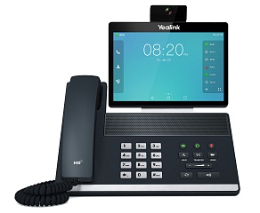

Yealink VP59
2 944 BYN
Цена носит информационный характер — актуальную стоимость и наличие уточняйте у менеджера.
Yealink VP59 - флагманский видео-телефон в линейке ip-телефонов Yealink, подходит для руководителей и удаленных работников. Под управлением операционной системы android 7.1, телефон обладает возможностью установки дополнительных приложений под задачи бизнеса. При подключении дополнительного модуля Yealink DD10K, к VP59 можно подключить до 4 дополнительных DECT-устройств.
Гарантия 18 месяцев!
Характеристики
Функции телефона
- 16 SIP-аккаунтов
- Удержание, отключение микрофона, DND ("Не беспокоить")
- Быстрый набор, горячая линия
- Переадресация, режим ожидания, трансфер
- Групповое прослушивание, экстренные вызовы
- Повторный набор, возврат вызова, автоответ
- Прямой IP-вызов без SIP-прокси
- Импорт/экспорт данных через Bluetooth, электронную почту и т.д.
- Yealink SDK (комплект разработки программного обеспечения)
- Особенности DoorPhone:
- предварительный просмотр;
- открытие одной кнопкой;
- мониторинг.
- 5-сторонняя аудиоконференция или смешанная конференция (10-сторонняя доступна в версии ПО v85 и выше)
- 3-сторонняя видеоконференция
- Выбор мелодии/загрузка/удаление
- Настройка времени: автоматически или вручную
- Правила набора, Action URL/URI
- RTCP-XR, VQ-RTCPXR
- Передача контента через Yealink VCD
- USB-порт 3.0 сверху для подключения камеры
- USB-порт 2.0 сзади для:
- подключения гарнитур;
- записи разговоров на USB-носитель;
- поддержки до 4 беспроводных трубок Yealink W52H/W53H/W56H при помощи адаптера DD10K;
- перевода звонка одним нажатием на беспроводную DECT-трубку, подключённую через DD10K;
- подключения Yealink CP900/CP700 и проводной гарнитуры Yealink UH36 (доступно в версии ПО v85 и выше).
- Встроенный Bluetooth 4.2 для:
- подключения Bluetooth-гарнитур;
- сопряжения с мобильными устройствами;
- сопряжения и подключения двух Bluetooth-устройств одновременно (доступно в версии ПО v85 и выше).
- Встроенный Wi-Fi (2,4/5 ГГц, 802.11b/g/n/a/ac)
- Проводное подключение к сети Wi-Fi для компьютера, подключённого в PC-порт телефона (доступно в версии ПО v85 и выше)
- Получение изображения из URL-адреса, содержащегося в сообщении INVITE (доступно в версии ПО v85 и выше)
- Звуковое оповещение о потере сети (доступно в версии ПО v85 и выше)
- Работа в качестве базовой станции через DECT USB Dongle DD10K с трубками W56H, W53H (также CP930W и W41P, доступно в версии ПО v85 и выше)
- Возможность регистрации Android ID для использования сервиса GMS (доступно в версии ПО v85 и выше)
- Функция беспроводной точки доступа (доступно в версии ПО v85 и выше)
- Загрузка записей разговора на удалённое хранилище (доступно в версии ПО v85 и выше)
- Отключение звука видеозвонка при интеркоме и автоответе (доступно в версии ПО v85 и выше)
Экран и индикаторы
- Цветной 8" сенсорный экран с разрешением 1280х800
- Регулируемый угол наклона экрана
- LED-индикатор питания и MWI
- Индикаторы состояния линий с красно-зелёной подсветкой
- Скринсейвер и обои
- Скриншоты
- Поддержка нескольких языков
- Caller ID с именем, номером и фотографией
- Индикация непрочитанных голосовых сообщений и их количества на BLF-клавишах (доступно в версии ПО v85 и выше)
Функциональные кнопки
- Клавиатура с английскими буквами
- 27 экранных кнопок с возможностью программирования
- Клавиши регулировки громкости
- 8 функциональных клавиш: гарнитура, повторный набор номера, трансфер, удержание вызова, громкая связь, голосовая почта, вкл./откл. микрофона, видео
Кодеки и настройки голоса
- HD voice, HAC
- Технология подавления фонового шума Acoustic Shield
- Широкополосные кодеки: G.722, Opus, G.722.1, G.722.1C
- Кодеки: G.711 (A/u), G.723.1, G.729AB, G.726, iLBC
- DTMF: In-band, Out-of-band (RFC2833), SIP INFO
- Full-duplex (полнодуплексная) громкая связь с AEC (подавление эха)
- VAD (обнаружение активности голоса), CNG (генератор комфортного шума), AEC (подавление эха), PLC (маркирование потери пакета с медиа-данными), AJB (адаптивный буфер для голосовых пакетов), AGC (автоматическая регулировка чувствительности микрофона)
- Smart Noise Filter (умная фильтрация шума) (доступно в версии ПО v85 и выше)
Видео
- 1080p 30fps Full HD-видеовызов
- Кодеки: H.264 High Profile, H.264, H.263, VP8
- Камера 2 МП со шторкой и световым индикатором
- Поле обзора по горизонтали: 84°
- Поле обзора по вертикали: 54°
- Кнопка быстрого включения изображения с камеры
Записные книги
- Локальная записная книга до 1000 контактов
- Чёрный список
- Удалённая записная книга XML, LDAP
- Интеллектуальный поиск
- Поиск по записным книгам, импорт/экспорт локальной записной книги
- История вызовов: набранные/принятые/пропущенные/переадресованные
Интеграция с IP-АТС
- Анонимный вызов, отклонение анонимных вызовов
- BLF
- BLA
- Hot-desking, экстренный вызов, интерком, paging, music on hold
- MWI, напоминание, запись разговора
- Голосовая почта, парковка вызова, захват вызова
Управление
- Android 7.1
- Предустановленные приложения: файловый менеджер, Email, календарь, камера, галерея, диктофон, калькулятор, браузер
- Настройка телефона: веб-интерфейс/экран телефона/Autoprovision
- FTP/TFTP/HTTP/HTTPS/PnP Autoprovision
- Zero-sp-touch, TR069
- Блокировка телефона
- Сброс к настройкам по умолчанию, перезагрузка
- Логи: PCAP Trace, system log
- Администратор может устанавливать/удалять приложения
- AutoProvision по PIN-коду (доступно в версии ПО v85 и выше)
Сетевые характеристики и безопасность
- IPv4/IPv6
- SIPv1 (RFC2543), SIPv2 (RFC3261)
- NAT, STUN
- Способы вызова: Proxy и peer-to-peer (по IP-адресу)
- Получение IP: статический/DHCP
- HTTP/HTTPS-сервер
- Синхронизация времени и даты через SNTP
- UDP/TCP/DNS-SRV (RFC3263)
- QoS: 802.1p/Q tagging (VLAN), Layer 3 ToS DSCP
- Поддержка TLS
- Поддержка резервирования SIP-сервера
- Управление HTTPS-сертификатами
- AES-шифрование конфигурационных файлов
- ADB-шифрование
- Поддержка стандартов шифрования и идентификации (MD5 и MD5-sess)
- SRTP (Внимание! В продуктах, предназначенных для стран-участников Таможенного союза, данный функционал отсутствует.)
- Поддержка протокола HELD для получения информации о местоположении для вызова служб экстренной помощи (доступно в версии ПО v85 и выше)
Физические характеристики
- Крепление к стене
- 2 х RJ45 Ethernet-порта 10/100/1000 Мбит/с
- POE (IEEE 802.3af), class 3
- Разъём для замка
- Выход HDMI
- 1 x USB-порт сверху для CAM50
- 1 x USB-порт сзади
- 1 х RJ9 для подключения трубки
- 1 х RJ9 для подключения гарнитуры
- Блок питания: вход 100-240 В DC, выход 12 В, 1 А
- Потребление через блок питания: 6,24 - 9 Вт
- Потребление через POE: 7 - 10,2 Вт
- Размеры (Ш х Г х В х Т): 273 х 226 х 285 х 42 мм
- Рабочая влажность: 10-95%
- Рабочая температура: 0-40 °C